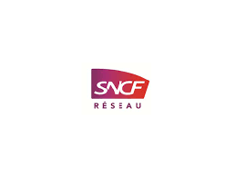
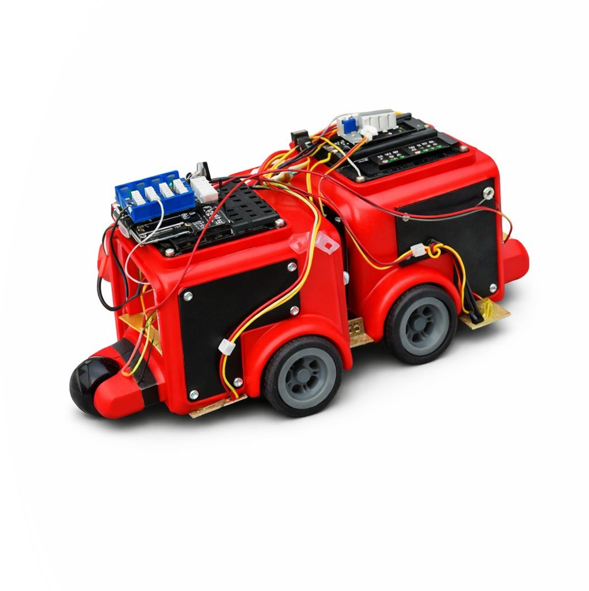

Page 4: Objectif Professionnel

Signalisation Électrique
Mon but : Intégrer la SNCF en tant que Technicien Supérieur. Je souhaite garantir la sécurité des circulations via la maintenance des systèmes de sécurité.
BIENVENUE SUR MON PORTFOLIO PROFESSIONNEL
Démarrer la visite →Je suis Ethan LAVIGNON, passionné par l'électronique et l'automatisme. Mon but est de transformer la théorie en réalisations concrètes sur le terrain.
Curieux et rigoureux, j'aime comprendre le fonctionnement des systèmes complexes. Mon parcours au sein de l'IUT d'Évry m'a permis de forger une identité technique forte tournée vers l'industrie et le ferroviaire.
Mon but : Intégrer la SNCF en tant que Technicien Supérieur. Je souhaite garantir la sécurité des circulations via la maintenance des systèmes de sécurité.
Électronique, Informatique Industrielle et Automatisme à l'IUT d'Évry.
Baccalauréat Général : Spécialités Mathématiques et Physique-Chimie. Option NSI.

Caténairiste : Stage à l'Infrapole Paris Sud Est. J'ai découvert un métier crucial pour assurer la sécurité et la fiabilité du transport ferroviaire.

Conception d'un robot autonome capable de détecter et d'éjecter un adversaire hors d'un ring via des capteurs ultrasoniques.
Réalisation d'un robot autonome utilisant des capteurs infrarouges pour suivre une ligne au sol. Travail sur l'asservissement des moteurs.

Développement d'un chronomètre numérique de précision sous Arduino. Gestion de l'affichage en temps réel.
Création d'un métronome réglable via potentiomètre. Travail sur la gestion des fréquences répétitives et du codage C++.
Maîtrise complète de l'écosystème Arduino pour l'automatisation de divers systèmes électroniques et domotiques.
Câblage BT, Schémas, Oscilloscope, Multimètre.
Langage C, Python, Arduino, Proteus, Matlab.
Respect strict des procédures et de la sécurité ferroviaire.
Capacité d'intégration en brigade technique sur le terrain.
📍 Melun / Île-de-France | 📧 [Ton Email]
Prêt pour de nouveaux défis à la SNCF.
RETOUR ACCUEIL ⬆